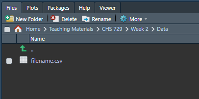
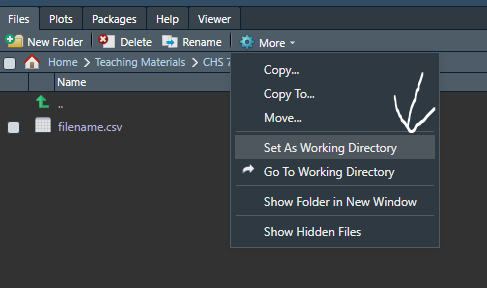
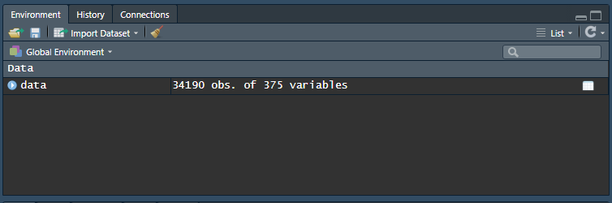
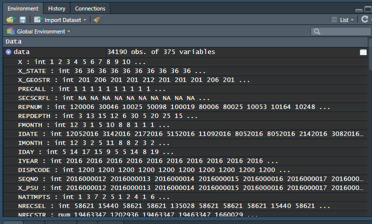
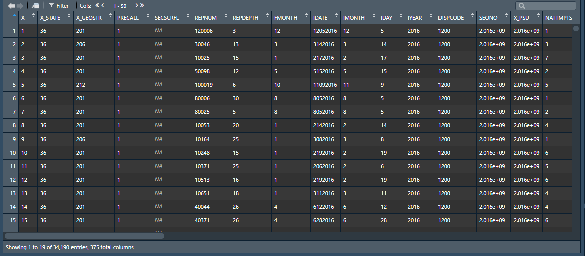
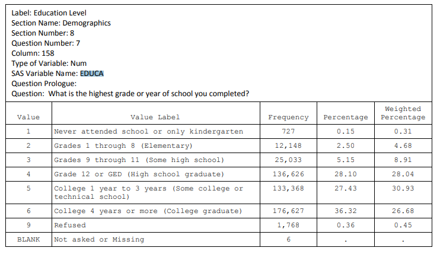

Chapter 4 Working with Datasets in R
R provides us a powerful interface through which we can manipulate and work with our data. While it is important that we understand different statistical principles so that we may undertake rigorous quantitative work, a large portion of time will be spent loading data, cleaning data, and preparing data for analyses. In fact, it is not uncommon for 90% or more of the code you write for an analysis to be dedicated to just getting the data ready for the analysis itself. As such, to be effective applied statisticians, it is important we be comfortable working with and manipulating datasets.
4.1 Loading a Dataset into R
One of the most common formats for a dataset to be in is a .csv file. CSV stands for “comma-separated values.” You are likely familiar with CSVs, as they are a standard formatting option for spreadsheet data (i.e., Microsoft Excel, Google Sheets). We can use the \(read.csv()\) function in R to read a .csv file, like so:
data <- read.csv("filename.csv", header = T)In the above line of code, we read the a file called “filename.csv” and saved it into the object we’ve called “data.” We use the argument \(header = T\) to tell R that the first row of the csv contains the names of each of the columns (i.e., the names of our variables), as opposed to containing data.
In order to read the file, you must have the “Current Working Directory” set to the folder containing the file. You see, R treats each folder on your computer like a room - R hangs out in the room that you tell it to. So, if you want R to read in “filename.csv,” you need to make sure that R is in the correct room (folder). You can check what your working directory is using the \(getwd()\) function:
getwd()## [1] "C:/Users/Charl/OneDrive/Documents/Intro to Applied Stats with R"Now, if R is in the wrong folder, you need to tell it to go to the correct folder. You could use the \(setwd(dir = ...)\) function, but RStudio has a nice way to do this without typing code. On the bottom right hand corner of your RStudio window is the File Explorer. You can click your way to the correct folder such that you can see your file, like so:

Once, here, you then click the “More” dropdown and select “Set as Working Directory,” like so:

Now you are in the correct directory and can load your file in.
4.1.1 Loading Other Formats of Data
Now, .csvs are not the only type of file format your data may take. There are .RDS (R specific objects), .xlsx (Excel), .sas7bdat (SAS), .sav (SPSS) files, among many others. While I cannot provide an exhaustive list, I wanted to provide some libraries and functions that may be useful to you depending on where your file came from. The \(foreign\) and \(readxl\) libraries are particularly useful. Here are some examples for how you can read in various file types:
## Reading an RDS file
dataRDS <- readRDS("filename.rds")
## Reading an Excel file
## You will need the "readxl" library
library(readxl)
dataXL <- read_excel("filename.xlsx")
## Reading an SPSS file
## You will need the "foreign" library
library(foreign)
dataSPSS <- read.spss("filename.sav")
## Reading SAS file
## You will need the "haven" library
library(haven)
dataSAS <- read_sas("filename.sas7bdat")If you look at the documentation, you will see that both the \(foreign\) and \(haven\) libraries provide many functions for loading various data types. If you ever have a file type that you can not figure out how to load into R, you should search something like “Load [insert file type] into R.” There is very likely a Stack Overflow forum post that will explain to you how to do it. While R does not have the same type of official documentation as proprietary software like SPSS or SAS, R does have a broad community of users who share and discuss how to use R effectively. Google is your friend :)
4.2 Exploring the Data
Once the dataset is loaded into R, R treats it as a data.frame object. It is important that we know how to use R to look at the data. Often, one of the hardest parts of running a statistical analysis is making sure that our data is in the correct format. Usually, when we receive a dataset it is not perfectly formatted for our intended purposes.
We are going to use data from the BRFSS survey from the state of New York to display how we can use R to work with data. You can download the dataset here if you’d like to follow along:
data <- read.csv("Data/ny_2016_brfss.csv", header = T)4.2.1 Keep Your Codebook Handy
Before we look at the data, it is crucial that you have the codebook for your data on hand. The codebook is a form of documentation that accompanies data which explains what each variable in the dataset is and how it was calculated. Typically, if you download a dataset from a public source or receive a dataset as part of a study, there is a codebook which accompanies it. However, in some cases (particularly on smaller research projects), there is no codebook - in such cases, getting a copy of the survey questionaire is necessary so that you can match up variables in the dataset with the questions that were asked on the survey.
A codebook tells you what is in your dataset. You need to have it handy whenever you work with a given dataset. The codebook for the 2016 BRFSS study is available here
4.2.2 The Environment pane
The first thing we will notice when we load the dataset is that the environment pane in the top right corner of RStudio will update to include it, seeing something like:

From this information, we can see that our dataset is made up of 34,190 observations (rows) and 375 variables. If you click the right arrow next to the name of the data.frame, then it will expand and show the first several variables and some values.

We can also see in this example the letters “int” before many of the variables. This is RStudio tellings you that each of theses variables is an integer type of data. You might also see “num” for numeric, “char” for character (like written text), or “factor” for categorical data.
Finally, if you click on the name of the data.frame directly, it will execute the \(View()\) function and open the data.frame in a spreadsheet style view, which looks like:

There are buttons and filters you can use to explore the data, much like how you would be able to if you opened the file in Excel. This view can be useful for looking at the data, but we typically do not do any of our analytic work via this View. Sometimes, it can be useful to open this View to confirm that some operation executed correctly or to try to identify specific instances of missing data.
4.2.3 Functions for Exploring and Cleaning Data
When you first load a dataset, there are many functions which can be useful to know. The first is the \(head()\) function. This function tells R to print out the first several rows of the data.frame, like so:
head(data)## X X_STATE X_GEOSTR PRECALL SECSCRFL REPNUM REPDEPTH FMONTH IDATE IMONTH
## 1 1 36 201 1 NA 120006 3 12 12052016 12
## 2 2 36 206 1 NA 30046 13 3 3142016 3
## 3 3 36 201 1 NA 10025 15 1 2172016 2
## 4 4 36 201 1 NA 50098 12 5 5152016 5
## 5 5 36 212 1 NA 100019 6 10 11092016 11
## 6 6 36 201 1 NA 80006 30 8 8052016 8
## IDAY IYEAR DISPCODE SEQNO X_PSU NATTMPTS NRECSEL NRECSTR PVTRESD1
## 1 5 2016 1200 2016000012 2016000012 1 58621 19463347 NA
## 2 14 2016 1200 2016000013 2016000013 3 15440 1202936 NA
## 3 17 2016 1200 2016000014 2016000014 7 58621 19463347 NA
## 4 15 2016 1200 2016000015 2016000015 2 58621 19463347 NA
## 5 9 2016 1200 2016000016 2016000016 5 135028 1660029 NA
## 6 5 2016 1200 2016000017 2016000017 1 58621 19463347 NA
## COLGHOUS STATERES LADULT NUMADULT CADULT PVTRESD3 CCLGHOUS CSTATE1 RSPSTAT1
## 1 NA NA NA NA 1 1 NA 2 36
## 2 NA NA NA NA 2 1 NA 2 36
## 3 NA NA NA NA 1 1 NA 2 36
## 4 NA NA NA NA 1 1 NA 2 36
## 5 NA NA NA NA 2 1 NA 2 36
## 6 NA NA NA NA 1 1 NA 2 36
## LANDLINE HHADULT GENHLTH PHYSHLTH MENTHLTH POORHLTH HLTHPLN1 PERSDOC2 MEDCOST
## 1 2 1 1 88 88 NA 1 3 2
## 2 2 5 4 5 20 2 1 2 2
## 3 1 3 3 3 30 10 1 1 1
## 4 2 1 4 30 12 30 2 1 1
## 5 2 2 2 88 88 NA 1 2 2
## 6 2 3 2 1 20 88 1 3 1
## CHECKUP1 EXERANY2 SLEPTIM1 CVDINFR4 CVDCRHD4 CVDSTRK3 ASTHMA3 ASTHNOW
## 1 2 1 6 2 2 2 2 NA
## 2 3 2 6 2 2 2 2 NA
## 3 1 1 5 2 2 2 2 NA
## 4 2 1 6 2 2 2 2 NA
## 5 2 1 7 2 2 2 2 NA
## 6 2 1 7 2 2 2 1 2
## CHCSCNCR CHCOCNCR CHCCOPD1 HAVARTH3 ADDEPEV2 CHCKIDNY DIABETE3 DIABAGE2
## 1 2 2 2 2 2 2 3 NA
## 2 2 2 2 2 1 2 3 NA
## 3 2 2 2 2 1 2 3 NA
## 4 2 2 2 2 1 2 3 NA
## 5 2 2 2 2 2 2 3 NA
## 6 2 2 2 2 1 2 3 NA
## LASTDEN3 RMVTETH3 SEX AGE HISPANC3 MRACE1 ORACE3 MARITAL EDUCA RENTHOM1
## 1 1 8 1 33 5 10 NA 5 6 2
## 2 1 8 2 20 5 1088 NA 5 5 2
## 3 4 8 1 47 5 1088 NA 5 6 3
## 4 1 8 1 22 5 1088 NA 5 4 2
## 5 1 8 2 36 5 1088 NA 1 5 2
## 6 2 8 1 26 5 1088 NA 6 6 2
## CTYCODE1 ZIPCODE1 NUMHHOL2 NUMPHON2 CPDEMO1 VETERAN3 EMPLOY1 CHILDREN INCOME2
## 1 NA DSU NA NA NA 2 1 88 8
## 2 NA DSU NA NA NA 2 6 88 77
## 3 NA DSU NA NA NA 1 1 88 8
## 4 NA DSU NA NA NA 2 4 88 3
## 5 NA DSU NA NA NA 2 1 3 6
## 6 NA DSU NA NA NA 2 1 88 77
## INTERNET WEIGHT2 HEIGHT3 PREGNANT DEAF BLIND DECIDE DIFFWALK DIFFDRES
## 1 1 NA NA NA 2 2 2 2 2
## 2 1 NA NA 2 2 2 2 2 2
## 3 1 NA NA NA 2 2 1 2 2
## 4 1 NA NA NA 2 2 2 2 2
## 5 1 NA NA 2 2 2 2 2 2
## 6 1 NA NA NA 2 2 7 2 2
## DIFFALON SMOKE100 SMOKDAY2 STOPSMK2 LASTSMK2 USENOW3 ECIGARET ECIGNOW ALCDAY5
## 1 2 1 1 2 NA 3 1 3 103
## 2 1 2 NA NA NA 3 1 3 203
## 3 2 2 NA NA NA 3 2 NA 102
## 4 2 1 3 NA 5 3 1 2 888
## 5 2 1 3 NA 5 3 1 1 888
## 6 2 1 3 NA 4 3 1 3 215
## AVEDRNK2 DRNK3GE5 MAXDRNKS FLUSHOT6 FLSHTMY2 PNEUVAC3 TETANUS FALL12MN
## 1 7 12 10 2 NA 2 3 NA
## 2 2 88 3 2 NA 1 3 NA
## 3 2 88 3 1 102015 2 2 2
## 4 NA NA NA 1 22016 1 4 NA
## 5 NA NA NA 2 NA 7 3 NA
## 6 1 4 7 1 22016 7 7 NA
## FALLINJ2 SEATBELT DRNKDRI2 HADMAM HOWLONG HADPAP2 LASTPAP2 HPVTEST HPLSTTST
## 1 NA 4 88 NA NA NA NA NA NA
## 2 NA 1 88 2 NA 2 NA 2 NA
## 3 88 1 88 NA NA NA NA NA NA
## 4 NA 1 NA NA NA NA NA NA NA
## 5 NA 1 NA 1 1 1 1 1 1
## 6 NA 2 88 NA NA NA NA NA NA
## HADHYST2 PCPSAAD2 PCPSADI1 PCPSARE1 PSATEST1 PSATIME PCPSARS1 BLDSTOOL
## 1 NA NA NA NA NA NA NA NA
## 2 2 NA NA NA NA NA NA NA
## 3 NA 1 1 1 1 1 5 NA
## 4 NA NA NA NA NA NA NA NA
## 5 2 NA NA NA NA NA NA NA
## 6 NA NA NA NA NA NA NA NA
## LSTBLDS3 HADSIGM3 HADSGCO1 LASTSIG3 HIVTST6 HIVTSTD3 HIVRISK4 PDIABTST
## 1 NA NA NA NA 1 62016 1 NA
## 2 NA NA NA NA 2 NA 2 NA
## 3 NA NA NA NA 1 772015 NA NA
## 4 NA NA NA NA 2 NA 2 NA
## 5 NA NA NA NA 1 12008 2 NA
## 6 NA NA NA NA 7 NA 1 NA
## PREDIAB1 CAREGIV1 CRGVREL1 CRGVLNG1 CRGVHRS1 CRGVPRB2 CRGVPERS CRGVHOUS
## 1 NA NA NA NA NA NA NA NA
## 2 NA NA NA NA NA NA NA NA
## 3 NA NA NA NA NA NA NA NA
## 4 NA NA NA NA NA NA NA NA
## 5 NA NA NA NA NA NA NA NA
## 6 NA NA NA NA NA NA NA NA
## CRGVMST2 CRGVEXPT CIMEMLOS CDHOUSE CDASSIST CDHELP CDSOCIAL CDDISCUS SSBSUGR2
## 1 NA NA NA NA NA NA NA NA NA
## 2 NA NA NA NA NA NA NA NA NA
## 3 NA NA NA NA NA NA NA NA NA
## 4 NA NA NA NA NA NA NA NA NA
## 5 NA NA NA NA NA NA NA NA NA
## 6 NA NA NA NA NA NA NA NA NA
## SSBFRUT2 TYPEWORK TYPEINDS SXORIENT TRNSGNDR RCSBIRTH RCSGENDR RCHISLA1
## 1 NA DSU DSU NA NA DSU NA DSU
## 2 NA DSU DSU NA NA DSU NA DSU
## 3 NA DSU DSU NA NA DSU NA DSU
## 4 NA DSU DSU NA NA DSU NA DSU
## 5 NA DSU DSU NA NA DSU NA DSU
## 6 NA DSU DSU NA NA DSU NA DSU
## RCSRACE1 RCSBRAC2 RCSRLTN2 CASTHDX2 CASTHNO2 QLACTLM2 USEEQUIP QSTVER QSTLANG
## 1 DSU NA NA NA NA NA NA 20 1
## 2 DSU NA NA NA NA NA NA 20 1
## 3 DSU NA NA NA NA NA NA 20 1
## 4 DSU NA NA NA NA NA NA 20 1
## 5 DSU NA NA NA NA NA NA 20 1
## 6 DSU NA NA NA NA NA NA 20 1
## X_MSACODE MSCODE X_STSTR X_STRWT X_RAW X_WT2 X_RAWRAKE X_WT2RAKE
## 1 DSU NA 362019 332.02004 NA 332.02004 1 332.02004
## 2 DSU NA 362069 77.91039 NA 77.91039 1 77.91039
## 3 DSU NA 362019 332.02004 NA 332.02004 1 332.02004
## 4 DSU NA 362019 332.02004 NA 332.02004 1 332.02004
## 5 DSU NA 362129 12.29396 NA 12.29396 1 12.29396
## 6 DSU NA 362019 332.02004 NA 332.02004 1 332.02004
## X_REGION X_IMPSEX X_IMPAGE X_IMPRACE X_IMPNPH X_IMPCTY X_IMPEDUC X_IMPMRTL
## 1 NA 1 33 1 NA NA 6 5
## 2 NA 2 20 1 NA NA 5 5
## 3 NA 1 47 1 NA NA 6 5
## 4 NA 1 22 1 NA NA 4 5
## 5 NA 2 36 1 NA NA 5 1
## 6 NA 1 26 1 NA NA 6 6
## X_IMPHOME O_STATE X_CHISPNC X_CRACE1 X_CPRACE X_IMPCAGE X_IMPCRAC X_IMPCSEX
## 1 2 1 NA NA NA NA NA NA
## 2 2 2 NA NA NA NA NA NA
## 3 3 4 NA NA NA NA NA NA
## 4 2 4 NA NA NA NA NA NA
## 5 2 4 NA NA NA NA NA NA
## 6 2 5 NA NA NA NA NA NA
## X_RAWCH X_WT2CH X_CLCM1V2 X_CLCM2V2 X_CLCM3V2 X_CLCM4V2 X_CLCM5V2 X_CLCWTV2
## 1 NA NA NA NA NA NA NA NA
## 2 NA NA NA NA NA NA NA NA
## 3 NA NA NA NA NA NA NA NA
## 4 NA NA NA NA NA NA NA NA
## 5 NA NA NA NA NA NA NA NA
## 6 NA NA NA NA NA NA NA NA
## X_DUALUSE X_DUALCOR X_LLCPWT2 X_LLCPM01 X_LLCPM02 X_LLCPM03 X_LLCPM04
## 1 9 NA 1503.22419 2 1 4 2
## 2 9 NA 437.50684 8 1 3 2
## 3 2 0.3749592 1797.50648 4 1 4 2
## 4 9 NA 1941.69415 1 1 2 2
## 5 9 NA 72.34833 10 1 3 1
## 6 9 NA 1941.69415 2 1 4 2
## X_LLCPM05 X_LLCPM06 X_LLCPM07 X_LLCPM08 X_LLCPM09 X_LLCPM10 X_LLCPM11
## 1 2 1 1 1 5 26 9
## 2 2 6 1 1 17 100 34
## 3 2 1 5 3 4 21 7
## 4 2 1 1 1 4 18 7
## 5 2 6 5 1 22 135 44
## 6 2 1 1 1 4 19 7
## X_LLCPM12 X_LLCPM13 X_LLCPM14 X_LLCPM15 X_LLCPM16 X_LLCPWT X_LCM01V1
## 1 15 14 30 82 27 1544.12591 NA
## 2 50 29 68 173 58 778.14863 NA
## 3 11 11 19 64 21 1097.60766 NA
## 4 11 11 19 61 21 1770.86414 NA
## 5 57 26 61 160 52 40.91907 NA
## 6 11 11 19 62 21 1105.47228 NA
## X_LCM02V1 X_LCM03V1 X_LCM04V1 X_LCM05V1 X_LCM06V1 X_LCM07V1 X_LCM08V1
## 1 NA NA NA NA NA NA NA
## 2 NA NA NA NA NA NA NA
## 3 NA NA NA NA NA NA NA
## 4 NA NA NA NA NA NA NA
## 5 NA NA NA NA NA NA NA
## 6 NA NA NA NA NA NA NA
## X_LCPWTV1 X_LCM01V2 X_LCM02V2 X_LCM03V2 X_LCM04V2 X_LCM05V2 X_LCM06V2
## 1 NA NA NA NA NA NA NA
## 2 NA NA NA NA NA NA NA
## 3 NA NA NA NA NA NA NA
## 4 NA NA NA NA NA NA NA
## 5 NA NA NA NA NA NA NA
## 6 NA NA NA NA NA NA NA
## X_LCM07V2 X_LCM08V2 X_LCPWTV2 X_LCM01V3 X_LCM02V3 X_LCM03V3 X_LCM04V3
## 1 NA NA NA NA NA NA NA
## 2 NA NA NA NA NA NA NA
## 3 NA NA NA NA NA NA NA
## 4 NA NA NA NA NA NA NA
## 5 NA NA NA NA NA NA NA
## 6 NA NA NA NA NA NA NA
## X_LCM05V3 X_LCM06V3 X_LCM07V3 X_LCM08V3 X_LCPWTV3 X_RFHLTH X_PHYS14D
## 1 NA NA NA NA NA 1 1
## 2 NA NA NA NA NA 2 2
## 3 NA NA NA NA NA 1 2
## 4 NA NA NA NA NA 2 3
## 5 NA NA NA NA NA 1 1
## 6 NA NA NA NA NA 1 2
## X_MENT14D X_HCVU651 X_TOTINDA X_MICHD X_LTASTH1 X_CASTHM1 X_ASTHMS1 X_DRDXAR1
## 1 1 1 1 2 1 1 3 2
## 2 3 1 2 2 1 1 3 2
## 3 3 1 1 2 1 1 3 2
## 4 2 2 1 2 1 1 3 2
## 5 1 1 1 2 1 1 3 2
## 6 3 1 1 2 2 1 2 2
## X_EXTETH2 X_ALTETH2 X_DENVST2 X_MRACE1 X_M_RACE X_HISPANC X_RACE X_RACEG21
## 1 1 NA 1 1 10 2 1 1
## 2 1 NA 1 1 10 2 1 1
## 3 1 NA 2 1 10 2 1 1
## 4 1 NA 1 1 10 2 1 1
## 5 1 NA 1 1 10 2 1 1
## 6 1 NA 2 1 10 2 1 1
## X_RACEGR3 X_RACE_G1 X_AGEG5YR X_AGE65YR X_AGE80 X_AGE_G HTIN4 HTM4 WTKG3
## 1 1 1 3 1 33 2 NA NA NA
## 2 1 1 1 1 20 1 NA NA NA
## 3 1 1 6 1 47 4 NA NA NA
## 4 1 1 1 1 22 1 NA NA NA
## 5 1 1 4 1 36 3 NA NA NA
## 6 1 1 2 1 26 2 NA NA NA
## X_BMI5 X_BMI5CAT X_RFBMI5 X_CHLDCNT X_EDUCAG X_INCOMG X_SMOKER3 X_RFSMOK3
## 1 NA 2 1 1 4 5 1 2
## 2 NA 2 1 1 3 9 4 1
## 3 NA 2 1 1 4 5 4 1
## 4 NA 3 2 1 2 2 3 1
## 5 NA 2 1 4 3 4 3 1
## 6 NA 2 1 1 4 9 3 1
## X_ECIGSTS X_CURECIG DRNKANY5 DROCDY3_ X_RFBING5 X_DRNKWEK X_RFDRHV5 X_FLSHOT6
## 1 3 1 1 43 2 2100 2 NA
## 2 3 1 1 10 1 140 1 NA
## 3 4 1 1 29 1 400 1 NA
## 4 2 2 2 0 1 0 1 NA
## 5 1 2 2 0 1 0 1 NA
## 6 3 1 1 50 2 350 1 NA
## X_PNEUMO2 X_RFSEAT2 X_RFSEAT3 X_DRNKDRV X_RFMAM2Y X_MAM5021 X_RFPAP33
## 1 NA 2 2 2 NA NA NA
## 2 NA 1 1 2 NA NA NA
## 3 NA 1 1 2 NA NA NA
## 4 NA 1 1 9 NA NA NA
## 5 NA 1 1 9 NA NA 1
## 6 NA 1 2 2 NA NA NA
## X_RFPSA21 X_RFBLDS3 X_COL10YR X_HFOB3YR X_FS5YR X_FOBTFS X_CRCREC X_AIDTST3
## 1 NA NA NA NA NA NA NA 1
## 2 NA NA NA NA NA NA NA 2
## 3 1 NA NA NA NA NA NA 1
## 4 NA NA NA NA NA NA NA 2
## 5 NA NA NA NA NA NA NA 1
## 6 NA NA NA NA NA NA NA 9
## MEDICARE HLTHCVR1 STRSRENT STRSMEAL BPHIGH4 BPMEDS FALOLDRE FALREDUC EVERWALK
## 1 NA NA NA NA NA NA NA NA NA
## 2 NA NA NA NA NA NA NA NA NA
## 3 NA NA NA NA NA NA NA NA NA
## 4 NA NA NA NA NA NA NA NA NA
## 5 NA NA NA NA NA NA NA NA NA
## 6 NA NA NA NA NA NA NA NA NA
## EVERBIKE HEALTHCL1 HLTHPREG PREGEVER BRTHCNTL3 TYPCNTRL2 CLRCTREC EATFRUIT
## 1 NA NA NA NA NA NA NA NA
## 2 NA NA NA NA NA NA NA NA
## 3 NA NA NA NA NA NA NA NA
## 4 NA NA NA NA NA NA NA NA
## 5 NA NA NA NA NA NA NA NA
## 6 NA NA NA NA NA NA NA NA
## EATVEGET SEXHIST HSCNDMS HCVHEAR HCVTEST HCVLASTT HCVINPTR HCVINPTO HCVINPTA
## 1 NA NA NA NA NA NA NA NA NA
## 2 NA NA NA NA NA NA NA NA NA
## 3 NA NA NA NA NA NA NA NA NA
## 4 NA NA NA NA NA NA NA NA NA
## 5 NA NA NA NA NA NA NA NA NA
## 6 NA NA NA NA NA NA NA NA NA
## HCVPRIMR HCVPRIMO HCVPRIMA HCVTESTB ACEDEPRS ACEDRINK ACEDRUGS ACEPRISN
## 1 NA NA NA NA NA NA NA NA
## 2 NA NA NA NA NA NA NA NA
## 3 NA NA NA NA NA NA NA NA
## 4 NA NA NA NA NA NA NA NA
## 5 NA NA NA NA NA NA NA NA
## 6 NA NA NA NA NA NA NA NA
## ACEDIVRC ACEPUNCH ACEHURT ACESWEAR ACETOUCH ACETTHEM ACEHVSEX STRSYMP1
## 1 NA NA NA NA NA NA NA NA
## 2 NA NA NA NA NA NA NA NA
## 3 NA NA NA NA NA NA NA NA
## 4 NA NA NA NA NA NA NA NA
## 5 NA NA NA NA NA NA NA NA
## 6 NA NA NA NA NA NA NA NA
## STRSYMP2 STRSYMP3 STRSYMP5 STRSYMP6 FIRSTAID2 CMGENER CMDETECT CMBATTER
## 1 NA NA NA NA NA NA NA NA
## 2 NA NA NA NA NA NA NA NA
## 3 NA NA NA NA NA NA NA NA
## 4 NA NA NA NA NA NA NA NA
## 5 NA NA NA NA NA NA NA NA
## 6 NA NA NA NA NA NA NA NA
## CAREGIVB CIMEMLSB CDDISCSB REGION DSRIPREG PPS_1 PPS_3 PPS_8 PPS_9 PPS_14
## 1 NA NA NA 2 102 NA NA NA NA NA
## 2 NA NA NA 1 104 NA NA NA NA NA
## 3 NA NA NA 2 102 NA NA NA NA NA
## 4 NA NA NA 2 102 NA NA NA NA NA
## 5 NA NA NA 1 106 NA NA NA NA NA
## 6 NA NA NA 2 102 NA NA NA NA NA
## PPS_16 PPS_19 PPS_20 PPS_21 PPS_22 PPS_23 PPS_25 PPS_27 PPS_32 PPS_33 PPS_34
## 1 NA NA NA NA NA NA NA NA NA NA NA
## 2 NA NA NA NA NA NA NA NA NA NA NA
## 3 NA NA NA NA NA NA NA NA NA NA NA
## 4 NA NA NA NA NA NA NA NA NA NA NA
## 5 NA NA NA NA NA NA NA NA NA NA NA
## 6 NA NA NA NA NA NA NA NA NA NA NA
## PPS_36 PPS_39 PPS_40 PPS_43 PPS_44 PPS_45 PPS_46 PPS_48 PPS_52 X_CTYWGT
## 1 NA NA NA NA NA NA NA NA NA NA
## 2 NA NA NA NA NA NA NA NA NA NA
## 3 NA NA NA NA NA NA NA NA NA NA
## 4 NA NA NA NA NA NA NA NA NA NA
## 5 NA NA NA NA NA NA NA NA NA NA
## 6 NA NA NA NA NA NA NA NA NA NAYou’ll notice that we are currently working with a lot of data. 375 variables is way more than we need for our analysis, so, I want to narrow the dataset down to just the variables we need (this is where having the codebook nearby is useful!).
For my study I need the following data: age, sex, educational attainment, lifetime cigarette smoking, and lifetime diagnosis of heart disease. In the BRFSS it turns out they have two separate variables for heart disease, one related to myocardial infarction (CVDINFR4) and angina (CVDCRHD4), so I want both of those. I can narrow down my dataset like so:
## First, I look in the codebook and I find the names of the variables I want
## I am going to save the variable names into a vector like so
variables <- c("SEX","AGE","EDUCA","SMOKE100","CVDINFR4","CVDCRHD4")
## Next, we simply subset our dataset using these variable names
## The following line of code tells R to only include the columns of the dataset that contain the specified variable names
data <- data[,variables]
## Now we can run the head() function to confirm that it work
head(data)## SEX AGE EDUCA SMOKE100 CVDINFR4 CVDCRHD4
## 1 1 33 6 1 2 2
## 2 2 20 5 2 2 2
## 3 1 47 6 2 2 2
## 4 1 22 4 1 2 2
## 5 2 36 5 1 2 2
## 6 1 26 6 1 2 2Cool! 6 variables is much easier to work with than 375. However, all of the values for the variables are numbers!!! What on earth does 1 mean for SMOKE100? For that matter, what is SMOKE100??? So, this is where the codebook is truly necessary. It appears that many of these variables are categorical, but the dataset only contains the numeric values for the categories. So, now we need to use the codebook and assign that actual category levels. For example, for the sex variable we see the values 1 and 2…it seems intuitive that these may correspond to “Male” and “Female,” but without the codebook we have no way of knowing which!
Let’s start by opening the codebook up and looking at the EDUCA variable. Now, to find it I am just going to use the Ctrl+F command and type in EDUCA to find it. Here is a photo of the entry:

First we can see that the specific question is “What is the highest grade or year of school you completed?” Then we can see what each numeric value maps onto. A value of 1 means “Never attended school or only kindergarten,” a value of 2 means “Grades 1 through 8 (Elementary)” and so on.
Now, we are going to use the \(factor()\) function like we learned in the last class to turn the numeric value into a categorical one, like so:
## Factor Educational Attainment
data$EDUCA <- factor(data$EDUCA,
levels = c(1,2,3,4,5,6,9),
labels = c("Never attended school or only kindergarten",
"Grades 1 through 8",
"Grades 9 through 11",
"Grade 12 or GED",
"College 1 year to 3 years",
"College 4 years or more",
"Refused to Answer"))Now, we can repeat this process with each of the categorical variables like so:
## Factor SEX
data$SEX <- factor(data$SEX, levels = c(1,2,9), labels = c("Male","Female","Refused"))
## Factor Smoke 100 - Have you smoked at least 100 cigarettes in your entire life?
## I decided to write out the full question here, because the variable name does not make it obvious
data$SMOKE100 <- factor(data$SMOKE100, levels = c(1,2,7,9), labels = c("Yes",
"No",
"Don't Know",
"Refused"))
## Factor CVDINF4 - "Has a doctor, nurse, or other health professional ever told you
## that you had a heart attack, also called a myocardial infarction?"
data$CVDINFR4 <- factor(data$CVDINFR4, levels = c(1,2,7,9), labels = c("Yes",
"No",
"Don't Know/Not Sure",
"Refused"))
## Factor CVDCRHD4 - "Has a doctor, nurse, or other health professional ever told you
## that you had angina or coronary heart disease?
## NOTE: This next line of code is almost identical to the one above
## Copy-pasting will save you lots of time BUT, you need to make sure you change the parts that are different
data$CVDCRHD4 <- factor(data$CVDCRHD4, levels = c(1,2,7,9), labels = c("Yes",
"No",
"Don't Know/Not Sure",
"Refused"))What’s nice with R is that now that you wrote these functions you don’t have to write them again. Every time you load your dataset, you can also run these lines of codes to prepare your dataset for analysis. This is also good because you never have to edit your raw data file. Never edit the raw datafile you got for analysis. R lets you modify the data after you’ve loaded it, so that you can work with your dataset without editing the raw file.
So, let’s try and run the \(head()\) function again and see how our data looks now:
head(data)## SEX AGE EDUCA SMOKE100 CVDINFR4 CVDCRHD4
## 1 Male 33 College 4 years or more Yes No No
## 2 Female 20 College 1 year to 3 years No No No
## 3 Male 47 College 4 years or more No No No
## 4 Male 22 Grade 12 or GED Yes No No
## 5 Female 36 College 1 year to 3 years Yes No No
## 6 Male 26 College 4 years or more Yes No NoThat’s much better! However, we have a lot of NOs over there in the CVDINFR4 column. It would be weird if they were all NOs, so we want a way that lets us see the variable breakdown (i.e., How many YES responses and how many NO responses). This is where we can use the \(summary()\) function, like so:
summary(data$CVDINFR4)## Yes No Don't Know/Not Sure Refused
## 2021 32020 130 19summary(data$CVDCRHD4)## Yes No Don't Know/Not Sure Refused
## 2127 31853 186 24Nice! So now we can see how many Yes, No responses to each question, as well as how many people didn’t know or refused to answer. We can also run the \(summary()\) function on the entire dataset and it will show us a similar overview for each variable. Notice how the computer seems to recognize that age is a numeric variable and, instead of providing frequencies, it instead provides us with Mean, Median and the Interquartile Range.
summary(data)## SEX AGE
## Male :15057 Min. : 7.00
## Female :19131 1st Qu.:41.00
## Refused: 2 Median :57.00
## Mean :54.52
## 3rd Qu.:68.00
## Max. :99.00
##
## EDUCA SMOKE100
## Never attended school or only kindergarten: 40 Yes :15177
## Grades 1 through 8 : 923 No :17126
## Grades 9 through 11 : 1989 Don't Know: 80
## Grade 12 or GED : 9952 Refused : 28
## College 1 year to 3 years : 8815 NA's : 1779
## College 4 years or more :12303
## Refused to Answer : 168
## CVDINFR4 CVDCRHD4
## Yes : 2021 Yes : 2127
## No :32020 No :31853
## Don't Know/Not Sure: 130 Don't Know/Not Sure: 186
## Refused : 19 Refused : 24
##
##
## So, for my research, I want to know the association between educational attainment and heart disease. But, it appears that many people did not respond to the education and heart disease questions. While we will learn other ways to impute missing data, for right now I want to show you how to simply remove them from your data set. This is why it is important to not ever edit your raw data file. It would be bad if you actually deleted an entry from your dataset. In R, we can always go back to the top of the file and reload the dataset if we think we made a mistake.
So, let’s start by removing all the people in the dataset who refused to answer the educational attainment question. There are many ways to approach removing a variable, but I’ll show you one I like to use. With coding, there are usually multiple ways to accomplish a given task.
## Let's remove all rows in the data set where EDUCA == "Refused to Answer"
## We do this with conditional brackets by telling the computer
## to only include rows in data where EDUCA does not equal (!=) "Refused to Answer"
data <- data[data$EDUCA != "Refused to Answer",]
## Notice how in the brackets we put a comma
## That is because data is a data.frame, meaning it is two-dimensional
## So, we must provide both a row number and a column number
## Here, we have left the column number blank, letting it know we want ALL the columns
## For row, we have told it to only include rows where data$EDUCA does not equal "Refused to Answer"
## NOTE: If you are getting an error, check to make sure that you have (or don't have) the comma
## That is a really common error to get
## Now let's look at our data!
summary(data$EDUCA)## Never attended school or only kindergarten
## 40
## Grades 1 through 8
## 923
## Grades 9 through 11
## 1989
## Grade 12 or GED
## 9952
## College 1 year to 3 years
## 8815
## College 4 years or more
## 12303
## Refused to Answer
## 0## As we can see, we got rid of all the observations we didn't want BUT
## We also do not want the level "Refused to Answer" to appear in our dataset anymore
## That could mess things up when we eventually run some analyses
## So, we will use the droplevels() function like so
data$EDUCA <- droplevels(data$EDUCA)
## The function tells the computer to get rid of levels if they don't appear in the vector
## Now let's look at our data again
summary(data$EDUCA)## Never attended school or only kindergarten
## 40
## Grades 1 through 8
## 923
## Grades 9 through 11
## 1989
## Grade 12 or GED
## 9952
## College 1 year to 3 years
## 8815
## College 4 years or more
## 12303So now we can repeat the process for our two heart disease variables. Notice that there are actually two levels we want to get rid of “Don’t Know/Not Sure” and “Refused,” so it is slightly different than above.
## I will show you two similar but slightly different ways to remove these two levels
## First, we can write two separate lines of code, one for each level like so
data <- data[data$CVDINFR4 != "Don't Know/Not Sure",]
data <- data[data$CVDINFR4 != "Refused",]
## Print out summary to confirm
summary(data$CVDINFR4)## Yes No Don't Know/Not Sure Refused
## 2010 31869 0 0## Perfect, now let's just drop those levels
data$CVDINFR4 <- droplevels(data$CVDINFR4)
## We can also do this in a single line using the & operator like so
data <- data[data$CVDCRHD4 != "Don't Know/Not Sure" & data$CVDCRHD4 != "Refused",]
## With the & we are telling the computer to include rows
## only if CVDCRHD4 doesn't equal "Don't Know/NOt Sure" AND doesn't equal "Refused"
## Print out summary to confirm
summary(data$CVDCRHD4)## Yes No Don't Know/Not Sure Refused
## 2107 31589 0 0## And then drop those levels
data$CVDCRHD4 <- droplevels(data$CVDCRHD4)Amazing, we have cleaned up some of our data! The last thing I want to do before we run our analysis is to create a new heart disease variable. I want my new variable, which I will call “any_heart_disease,” to be YES if either of the two heart disease variables are YES and be NO if both are NO. We are going to use a for-loop and if-else statements to do this. Like I said before, there are often many ways to do this. Understanding for-loops and if-else statements will be really useful for you as you continue your statistical coding journey!
## First, I am going to create the new column in our dataset
## I am going to assign NA as the value for this column
## We will fill in the values with our for-loop
data$any_heart_disease <- NA
## Let's look at our dataset real quick to confirm
head(data)## SEX AGE EDUCA SMOKE100 CVDINFR4 CVDCRHD4
## 1 Male 33 College 4 years or more Yes No No
## 2 Female 20 College 1 year to 3 years No No No
## 3 Male 47 College 4 years or more No No No
## 4 Male 22 Grade 12 or GED Yes No No
## 5 Female 36 College 1 year to 3 years Yes No No
## 6 Male 26 College 4 years or more Yes No No
## any_heart_disease
## 1 NA
## 2 NA
## 3 NA
## 4 NA
## 5 NA
## 6 NA## Now, I am going to use a for-loop to fill in each value
## We start by calling the for function like so
for(row_number in 1:nrow(data)){
## let's break this down
## this line can be translated as
## "For each number, saved as row_number, inbetween 1 and the number of rows in our data.frame, do the following..."
## Inside the brackets we then write the code we want to repeat
## This allows us to tell the computer to repeat an operation for each row
## so, we can treat row_number as a counter that keeps track of what row in the data frame we are on
## So, we want to check if either of our two heart disease variables are "Yes"
## Let's grab them like so:
infarction <- data$CVDINFR4[row_number]
## By writing [row_number] we are telling the computer to get the value at the current row we are working with
## We can do this with the other variable as well
angina <- data$CVDCRHD4[row_number]
## Perfect, we have our two values.
## Now, IF either value is equal to "Yes" we want to assign "Yes" to any_heart_disease
## ELSE we will assign "No"
## Which is exactly how an IF-ELSE statement works!
if(infarction == "Yes" | angina == "Yes"){
## The above line can be translated:
## "If infarctiohn equals Yes or angina equals Yes, do the following:
## Now we want to assign "Yes" to any_heart_disease
## However, we are going to just give it a number for now
## It is nice to have 1 = Yes and 0 = No
## So, we will do the following:
data$any_heart_disease[row_number] <- 1
## Don't forget the brackets with "row_number"
## If you did data$any_heart_disease <- 1, then you would assign that value to every single row!!!
## Next we write our else statement
## The computer will only run the ELSE if the IF statement was false
## In this case it will only run ELSE if neither of the variables equal "Yes"
} else{
## So we want to assign 0 to the final value
data$any_heart_disease[row_number] <- 0
}
}
## And then the last to do is make it categorical with the factor variable
data$any_heart_disease <- factor(data$any_heart_disease, levels = c(0,1), labels = c("No","Yes"))
## Let's run the summary function to make sure everything looks good!
summary(data)## SEX AGE
## Male :14806 Min. : 7.00
## Female :18888 1st Qu.:41.00
## Refused: 2 Median :57.00
## Mean :54.49
## 3rd Qu.:68.00
## Max. :99.00
## EDUCA SMOKE100
## Never attended school or only kindergarten: 37 Yes :14947
## Grades 1 through 8 : 893 No :16926
## Grades 9 through 11 : 1945 Don't Know: 75
## Grade 12 or GED : 9837 Refused : 26
## College 1 year to 3 years : 8741 NA's : 1722
## College 4 years or more :12243
## CVDINFR4 CVDCRHD4 any_heart_disease
## Yes: 1942 Yes: 2107 No :30707
## No :31754 No :31589 Yes: 2989
##
##
##
## Whenever you create a new variable, it is good to check to make sure everything looks good. I just ran the summary function and I noticed that 1,942 people reported infarction and 2,107 reported angina/coronary heart disease. As such, no more than 1,942 + 2,107 = 4,049 people could possible have had any heart disease, but at least 2,107 must have. Our new variable shows that 2,989 people had heart disease, which is in the range we would expect. This is a good sign that we created our variable correctly.
Now we are ready to run our analyses! But, that is for another day!